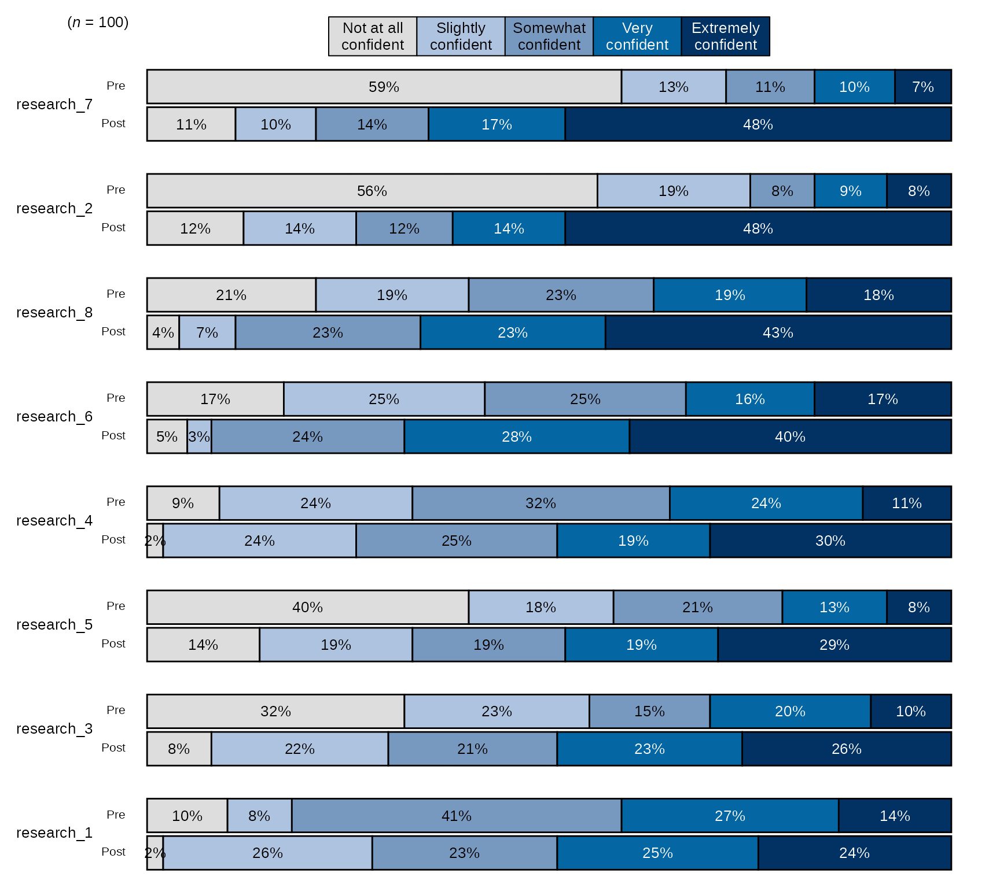

Blackstone Research and Evaluation uses the R
programming language as its main tool for data analysis and
visualization. The main goal of blackstone is to make the
process of coding in R as efficient as possible for
everyone at Blackstone Research and Evaluation.
In order to reach this goal, blackstone leverages
established R packages and the tidyverse family of R
packages in particular. These packages use the system of “tidy data” to
make data manipulation and analysis in R consistent and
well organized, blackstone also strives to follow this
philosophy.
The vignettes provided with blackstone will go into
greater detail as to how to use blackstone alongside these
other packages. The Setup and R Projects
vignette will show you how to set up an R project as well
as other standard workflow setups.
This document introduces you to blackstone and how it
fits into the basic workflow of data analysis and visualization at
Blackstone Research and Evaluation.
Overview of Data Workflow
Import and clean data from survey provider:
vignette("import_clean").Simple data analysis and statistical inference:
vignette("analysis").Data visualization and output for report writing:
vignette("data_visualization").
Importing data from SurveyMonkey
Our current survey provider is SurveyMonkey,
blackstone contains several functions that makes the
process of reading SurveyMonkey data into R a more
manageable process and creates a codebook for the data along the
way.
SurveyMonkey exports data with two header rows, which does not work
with R, where tibbles and dataframes can only have one row
of names.
Here is how to import data from SurveyMonkey using example data
provided with blackstone, this is a fake dataset of a pre
(baseline) survey.
There are three steps to this process:
- Create a codebook.
# File path for pre example data:
pre_data_fp <- blackstone::blackstoneExample("sm_data_pre.csv")
# 1. Create the codebook:
codebook_pre <- blackstone::createCodebook(pre_data_fp)
codebook_pre
#> # A tibble: 33 × 5
#> header_1 header_2 combined_header position variable_name
#> <chr> <chr> <chr> <int> <chr>
#> 1 Respondent ID NA Respondent ID 1 respondent_id
#> 2 Collector ID NA Collector ID 2 collector_id
#> 3 Start Date NA Start Date 3 start_date
#> 4 End Date NA End Date 4 end_date
#> 5 IP Address NA IP Address 5 ip_address
#> # ℹ 28 more rowsFor this codebook, the first column header_1 is the
first header from the SurveyMonkey data, the second column
header_2 is the second header, the third column
combined_header is the combination of the two headers,
position is the column number position for each
combined_header, and variable_name is a
cleaned up version for combined_header and will be the
column to edit to change the column names later on to shorter and more
meaningful names.
variable_name will be the column that renames all the
variables in the SurveyMonkey data.
- Edit the codebook to create meaningful variable names.
# Step 2. Edit the codebook:
# Set up sequential naming convections for matrix-style questions with shared likert scale response options:
# 8 items that are matrix-style likert scales- turned into a scale called `research`- here is how to easily name them all at once:
# Rows 11 to 18 belong to the "research" matrix question (you will have to look at the codebook and match the header_1 and header_2 to variable_name to change)
research_items <- codebook_pre[["variable_name"]][11:18]
research_names <- paste0("research_", seq_along(research_items)) %>% purrr::set_names(., research_items) # Create a new named vector of names for these columns
# 6 items that are matrix-style likert scales- turned into a scale called `ability`- Rows 19 to 24 named `variable_name`:
ability_items <- codebook_pre[["variable_name"]][19:24]
ability_names <- paste0("ability_", seq_along(ability_items)) %>% purrr::set_names(., ability_items) # Create a new named vector of names for these columns
# 6 items that are matrix-style likert scales- turned into a scale called `ethics`- Rows 19 to 24 named `variable_name`:
ethics_items <- codebook_pre[["variable_name"]][25:29]
ethics_names <- paste0("ethics_", seq_along(ethics_items)) %>% purrr::set_names(., ethics_items) # Create a new named vector of names for these columns
# Edit the `variable_names` column: Use dplyr::mutate() and dplyr::case_match() to change the column `variable_name`:
codebook_pre <- codebook_pre %>% dplyr::mutate(
variable_name = dplyr::case_match(
variable_name, # column to match
'custom_data_1' ~ "unique_id", # changes 'custom_data_1' to "unique_id"
'to_what_extent_are_you_knowledgeable_in_conducting_research_in_your_field_of_study' ~ "knowledge",
'with_which_gender_do_you_most_closely_identify' ~ "gender",
'what_is_your_current_role_in_the_program' ~ "role",
'which_race_ethnicity_best_describes_you_please_choose_only_one' ~ "ethnicity",
'are_you_a_first_generation_college_student' ~ "first_gen",
names(research_names) ~ research_names[variable_name], # takes the above named vector and when the name matches, applies new value in that position as replacement.
names(ability_names) ~ ability_names[variable_name], # Same for `ability_names`
names(ethics_names) ~ ethics_names[variable_name], # Same for `ability_names`
.default = variable_name # returns default value from original `variable_name` if not changed.
)
)
codebook_pre
#> # A tibble: 33 × 5
#> header_1 header_2 combined_header position variable_name
#> <chr> <chr> <chr> <int> <chr>
#> 1 Respondent ID NA Respondent ID 1 respondent_id
#> 2 Collector ID NA Collector ID 2 collector_id
#> 3 Start Date NA Start Date 3 start_date
#> 4 End Date NA End Date 4 end_date
#> 5 IP Address NA IP Address 5 ip_address
#> # ℹ 28 more rows
# Write out the edited codebook to save for future use-
# Be sure to double check questions match new names before writing out:
# readr::write_csv(codebook_pre, file = "{filepath-to-codebok}")- Read in the data and rename the variables with the codebook.
# 3. Read in the data and rename the vars using readRenameData(), passing the file path and the edited codebook:
pre_data <- blackstone::readRenameData(pre_data_fp, codebook = codebook_pre)
pre_data
#> # A tibble: 100 × 33
#> respondent_id collector_id start_date end_date ip_address email_address
#> <dbl> <dbl> <date> <date> <chr> <chr>
#> 1 114628000001 431822954 2024-06-11 2024-06-12 227.224.138.113 coraima59@me…
#> 2 114628000002 431822954 2024-06-08 2024-06-09 110.241.132.50 mstamm@hermi…
#> 3 114628000003 431822954 2024-06-21 2024-06-22 165.58.112.64 precious.fei…
#> 4 114628000004 431822954 2024-06-08 2024-06-09 49.34.121.147 ines52@gmail…
#> 5 114628000005 431822954 2024-06-02 2024-06-03 115.233.66.80 franz44@hotm…
#> # ℹ 95 more rows
#> # ℹ 27 more variables: first_name <chr>, last_name <chr>, unique_id <dbl>,
#> # knowledge <chr>, research_1 <chr>, research_2 <chr>, research_3 <chr>,
#> # research_4 <chr>, research_5 <chr>, research_6 <chr>, research_7 <chr>,
#> # research_8 <chr>, ability_1 <chr>, ability_2 <chr>, ability_3 <chr>,
#> # ability_4 <chr>, ability_5 <chr>, ability_6 <chr>, ethics_1 <chr>,
#> # ethics_2 <chr>, ethics_3 <chr>, ethics_4 <chr>, ethics_5 <chr>, …The SurveyMonkey example data is now imported with names taken from
the codebook column variable_name:
names(pre_data)
#> [1] "respondent_id" "collector_id" "start_date" "end_date"
#> [5] "ip_address" "email_address" "first_name" "last_name"
#> [9] "unique_id" "knowledge" "research_1" "research_2"
#> [13] "research_3" "research_4" "research_5" "research_6"
#> [17] "research_7" "research_8" "ability_1" "ability_2"
#> [21] "ability_3" "ability_4" "ability_5" "ability_6"
#> [25] "ethics_1" "ethics_2" "ethics_3" "ethics_4"
#> [29] "ethics_5" "gender" "role" "ethnicity"
#> [33] "first_gen"The vignette Importing and Cleaning Data
goes into deeper detail with example data on how to use
blackstone to import and clean data.
Data Analysis and Statistical Inference
First, read in the data that is merged and cleaned in the vignette
Importing and Cleaning Data:
# Read in clean SM data:
sm_data <- readr::read_csv(blackstone::blackstoneExample("sm_data_clean.csv"), show_col_types = FALSE)
## Set up character vectors of likert scale levels:
## Knowledge scale
levels_knowledge <- c("Not knowledgeable at all", "A little knowledgeable", "Somewhat knowledgeable", "Very knowledgeable", "Extremely knowledgeable")
## Research Items scale:
levels_confidence <- c("Not at all confident", "Slightly confident", "Somewhat confident", "Very confident", "Extremely confident")
## Ability Items scale:
levels_min_ext <- c("Minimal", "Slight", "Moderate", "Good", "Extensive")
## Ethics Items scale:
levels_agree5 <- c("Strongly disagree", "Disagree", "Neither agree nor disagree", "Agree", "Strongly agree")
# Demographic levels:
gender_levels <- c("Female","Male","Non-binary", "Do not wish to specify")
role_levels <- c("Undergraduate student", "Graduate student", "Postdoc", "Faculty")
ethnicity_levels <- c("White (Non-Hispanic/Latino)", "Asian", "Black", "Hispanic or Latino", "American Indian or Alaskan Native",
"Native Hawaiian or other Pacific Islander", "Do not wish to specify")
first_gen_levels <- c("Yes", "No", "I'm not sure")
# Use mutate() for convert each item in each scale to a factor with vectors above, across() will perform a function for items selected using contains() or can be selected
# by variables names individually using a character vector: _knowledge or use c("pre_knowledg","post_knowledge")
# Also create new numeric variables for all the likert scale items and use the suffix '_num' to denote numeric:
sm_data <- sm_data %>% dplyr::mutate(dplyr::across(tidyselect::contains("_knowledge"), ~ factor(., levels = levels_knowledge)), # match each name pattern to select to each factor level
dplyr::across(tidyselect::contains("_knowledge"), as.numeric, .names = "{.col}_num"), # create new numeric items for all knowledge items
dplyr::across(tidyselect::contains("research_"), ~ factor(., levels = levels_confidence)),
dplyr::across(tidyselect::contains("research_"), as.numeric, .names = "{.col}_num"), # create new numeric items for all research items
dplyr::across(tidyselect::contains("ability_"), ~ factor(., levels = levels_min_ext)),
dplyr::across(tidyselect::contains("ability_"), as.numeric, .names = "{.col}_num"), # create new numeric items for all ability items
# select ethics items but not the open_ended responses:
dplyr::across(tidyselect::contains("ethics_") & !tidyselect::contains("_oe"), ~ factor(., levels = levels_agree5)),
dplyr::across(tidyselect::contains("ethics_") & !tidyselect::contains("_oe"), as.numeric, .names = "{.col}_num"), # new numeric items for all ethics items
# individually convert all demographics to factor variables:
gender = factor(gender, levels = gender_levels),
role = factor(role, levels = role_levels),
ethnicity = factor(ethnicity, levels = ethnicity_levels),
first_gen = factor(first_gen, levels = first_gen_levels),
)
sm_data
#> # A tibble: 100 × 98
#> respondent_id collector_id start_date end_date ip_address email_address
#> <dbl> <dbl> <date> <date> <chr> <chr>
#> 1 114628000001 431822954 2024-06-11 2024-06-12 227.224.138.113 coraima59@me…
#> 2 114628000002 431822954 2024-06-08 2024-06-09 110.241.132.50 mstamm@hermi…
#> 3 114628000003 431822954 2024-06-21 2024-06-22 165.58.112.64 precious.fei…
#> 4 114628000004 431822954 2024-06-08 2024-06-09 49.34.121.147 ines52@gmail…
#> 5 114628000005 431822954 2024-06-02 2024-06-03 115.233.66.80 franz44@hotm…
#> # ℹ 95 more rows
#> # ℹ 92 more variables: first_name <chr>, last_name <chr>, unique_id <dbl>,
#> # pre_knowledge <fct>, pre_research_1 <fct>, pre_research_2 <fct>,
#> # pre_research_3 <fct>, pre_research_4 <fct>, pre_research_5 <fct>,
#> # pre_research_6 <fct>, pre_research_7 <fct>, pre_research_8 <fct>,
#> # pre_ability_1 <fct>, pre_ability_2 <fct>, pre_ability_3 <fct>,
#> # pre_ability_4 <fct>, pre_ability_5 <fct>, pre_ability_6 <fct>, …Likert Scale Table
The most common task is creating frequency tables of counts and
percentages for likert scale items, blackstone has the
likertTable() for that:
# Research items pre and post frequency table, with counts and percentages: use levels_confidence character vector
# use likertTable to return frequency table, passing the scale_labels: (can also label the individual questions using the arg question_label)
sm_data %>% dplyr::select(tidyselect::contains("research_") & !tidyselect::contains("_num") & where(is.factor)) %>%
blackstone::likertTable(., scale_labels = levels_confidence)Question |
Not at all |
Slightly |
Somewhat |
Very |
Extremely |
n |
|---|---|---|---|---|---|---|
pre_research_1 |
10 (10%) |
8 (8%) |
41 (41%) |
27 (27%) |
14 (14%) |
100 |
pre_research_2 |
56 (56%) |
19 (19%) |
8 (8%) |
9 (9%) |
8 (8%) |
100 |
pre_research_3 |
32 (32%) |
23 (23%) |
15 (15%) |
20 (20%) |
10 (10%) |
100 |
pre_research_4 |
9 (9%) |
24 (24%) |
32 (32%) |
24 (24%) |
11 (11%) |
100 |
pre_research_5 |
40 (40%) |
18 (18%) |
21 (21%) |
13 (13%) |
8 (8%) |
100 |
pre_research_6 |
17 (17%) |
25 (25%) |
25 (25%) |
16 (16%) |
17 (17%) |
100 |
pre_research_7 |
59 (59%) |
13 (13%) |
11 (11%) |
10 (10%) |
7 (7%) |
100 |
pre_research_8 |
21 (21%) |
19 (19%) |
23 (23%) |
19 (19%) |
18 (18%) |
100 |
post_research_1 |
2 (2%) |
26 (26%) |
23 (23%) |
25 (25%) |
24 (24%) |
100 |
post_research_2 |
12 (12%) |
14 (14%) |
12 (12%) |
14 (14%) |
48 (48%) |
100 |
post_research_3 |
8 (8%) |
22 (22%) |
21 (21%) |
23 (23%) |
26 (26%) |
100 |
post_research_4 |
2 (2%) |
24 (24%) |
25 (25%) |
19 (19%) |
30 (30%) |
100 |
post_research_5 |
14 (14%) |
19 (19%) |
19 (19%) |
19 (19%) |
29 (29%) |
100 |
post_research_6 |
5 (5%) |
3 (3%) |
24 (24%) |
28 (28%) |
40 (40%) |
100 |
post_research_7 |
11 (11%) |
10 (10%) |
14 (14%) |
17 (17%) |
48 (48%) |
100 |
post_research_8 |
4 (4%) |
7 (7%) |
23 (23%) |
23 (23%) |
43 (43%) |
100 |
Grouped Demograpic table
blackstone contains a function to create frequency
tables for demographics that can be grouped by a variable like role or
cohort as well: [groupedTable()].
# Set up labels for variables
# Labels for questions column of table, pass to question_labels argument:
demos_labels <- c('Gender' = "gender",
"Role" = "role",
'Race/Ethnicity' = "ethnicity",
'First-Generation College Student' = "first_gen")
sm_data %>% dplyr::select(gender, role, ethnicity, first_gen) %>% # select the demographic vars
blackstone::groupedTable(question_labels = demos_labels) # pass the new labels for the 'Question' column.Question |
Response |
n = 1001 |
|---|---|---|
Gender |
||
Female |
53 (53%) |
|
Male |
46 (46%) |
|
Non-binary |
1 (1%) |
|
Role |
||
Undergraduate student |
48 (48%) |
|
Graduate student |
23 (23%) |
|
Postdoc |
21 (21%) |
|
Faculty |
8 (8%) |
|
Race/Ethnicity |
||
White (Non-Hispanic/Latino) |
43 (43%) |
|
Asian |
11 (11%) |
|
Black |
18 (18%) |
|
Hispanic or Latino |
12 (12%) |
|
American Indian or Alaskan Native |
7 (7%) |
|
Native Hawaiian or other Pacific Islander |
7 (7%) |
|
Do not wish to specify |
2 (2%) |
|
First-Generation |
||
Yes |
51 (51%) |
|
No |
47 (47%) |
|
I'm not sure |
2 (2%) |
|
1n (%) | ||
Grouped by the variable role:
# Create a group demos table, split by role:
sm_data %>% dplyr::select(gender, role, ethnicity, first_gen) %>% # select the demographic vars
blackstone::groupedTable(col_group = "role", question_labels = demos_labels) # pass the new labels for the 'Question' column.Question |
Response |
Undergraduate student |
Graduate student |
Postdoc |
Faculty |
Total |
|---|---|---|---|---|---|---|
Gender |
||||||
Female |
24 (50%) |
13 (57%) |
11 (52%) |
5 (62%) |
53 (53%) |
|
Male |
23 (48%) |
10 (43%) |
10 (48%) |
3 (38%) |
46 (46%) |
|
Non-binary |
1 (2%) |
- |
- |
- |
1 (1%) |
|
Race/Ethnicity |
||||||
White (Non-Hispanic/Latino) |
17 (35%) |
11 (48%) |
10 (48%) |
5 (62%) |
43 (43%) |
|
Asian |
6 (12%) |
2 (9%) |
3 (14%) |
- |
11 (11%) |
|
Black |
11 (23%) |
3 (13%) |
3 (14%) |
1 (12%) |
18 (18%) |
|
Hispanic or Latino |
5 (10%) |
4 (17%) |
2 (10%) |
1 (12%) |
12 (12%) |
|
American Indian or Alaskan Native |
4 (8%) |
- |
3 (14%) |
- |
7 (7%) |
|
Native Hawaiian or other Pacific Islander |
4 (8%) |
2 (9%) |
- |
1 (12%) |
7 (7%) |
|
Do not wish to specify |
1 (2%) |
1 (4%) |
- |
- |
2 (2%) |
|
First-Generation |
||||||
Yes |
24 (50%) |
11 (48%) |
10 (48%) |
6 (75%) |
51 (51%) |
|
No |
23 (48%) |
12 (52%) |
10 (48%) |
2 (25%) |
47 (47%) |
|
I'm not sure |
1 (2%) |
- |
1 (5%) |
- |
2 (2%) |
|
1n (%) | ||||||
Statistical Inference: T-test or Wilcoxon test
Running Normality Test on Single Pre-Post Items
# Use a pipe-friendly version of `shapiro_test()` from `rstatix`, need to covert create a differnce score of post_knowledge_num - pre_knowledge_num named `knowledge_diff`:
sm_data %>% dplyr::select(tidyselect::contains("_knowledge") & tidyselect::contains("_num")) %>% # select knowledge pre and post numeric items
dplyr::mutate(knowledge_diff = post_knowledge_num - pre_knowledge_num) %>% # get difference of pre and post scores
rstatix::shapiro_test(knowledge_diff)
#> # A tibble: 1 × 3
#> variable statistic p
#> <chr> <dbl> <dbl>
#> 1 knowledge_diff 0.885 0.000000301Data is not normally distributed for the knowledge items (since the p-value is < 0.05)- use a Wilcoxon test.
# Use a pipe-friendly version of `wilcox_test()` from `rstatix`, need to covert to long form and have `timing` as a variable,
# the column named `p` is the p-value:
sm_data %>% dplyr::select(tidyselect::contains("_knowledge") & tidyselect::contains("_num")) %>%
tidyr::pivot_longer(tidyselect::contains(c("pre_", "post_")), names_to = "question", values_to = "response") %>%
tidyr::separate(.data$question, into = c("timing", "question"), sep = "_", extra = "merge") %>%
rstatix::wilcox_test(response ~ timing, paired = TRUE, detailed = TRUE)
#> # A tibble: 1 × 12
#> estimate .y. group1 group2 n1 n2 statistic p conf.low conf.high
#> * <dbl> <chr> <chr> <chr> <int> <int> <dbl> <dbl> <dbl> <dbl>
#> 1 2.50 resp… post pre 100 100 3800. 1.23e-13 2.00 3.00
#> # ℹ 2 more variables: method <chr>, alternative <chr>Wilcoxon test is significant, there is a significant difference in pre and post scores of knowledge scores.
The vignette Data analysis and Statistical Inference
goes into deeper detail on how to use blackstone to perform
more analysis and statistical tests on example data.
Data Visualization
blackstone has functions that create 3 types of charts
for data visualization: stacked bar charts, diverging stacked bar
charts, and arrow charts.
The functions for stacked bar charts and diverging stacked bar charts can use two different color palettes: a blue sequential palette or a blue-red diverging color palette.
The blue sequential palette should be used for all likert scales that have one clear direction like: Not at all confident, Slightly confident, Somewhat confident, Very confident, Extremely confident
The blue-red diverging color palette should be used if the items have a likert scale that is folded or runs from a negative to positive valence like this: Strongly disagree, Disagree, Neither agree nor disagree, Agree, Strongly agree
This introduction will only show how to create a stacked bar chart,
see the vignette Data Visualization for a
full explanation of all the data visualization functions in
blackstone.
Stacked Bar Charts
The most common visual that is used with reporting at Blackstone
Research and Evaluation is a stacked bar chart, blackstone
has a function to that makes creating these charts fast and easy:
stackedBarChart().
stackedBarChart() takes in a tibble of factor/character
variables to turn into a stacked bar chart. The other requirement is a
character vector of scale labels for the likert scale that makes up the
items in the tibble (same as the one use to set them up as factors in
the data cleaning section).
Pre-post Stacked Bar Chart with Overall n and Percentages:
- By default,
stackedBarChart()uses the blue sequential palette to color the bars and sorts the items by the ones with the highest post items with the highest counts/percentages.
# Research Items scale:
levels_confidence <- c("Not at all confident", "Slightly confident", "Somewhat confident", "Very confident", "Extremely confident")
# select variables and pass them to `stackedBarChart()` along with scale_labels.
sm_data %>% dplyr::select(tidyselect::contains("research_") & !tidyselect::contains("_num") & where(is.factor)) %>% # select the factor variables for the research items
blackstone::stackedBarChart(., scale_labels = levels_confidence, pre_post = TRUE)
The vignette Data Visualization goes
into deeper detail on how to use blackstone to create data
visualizations with example data.